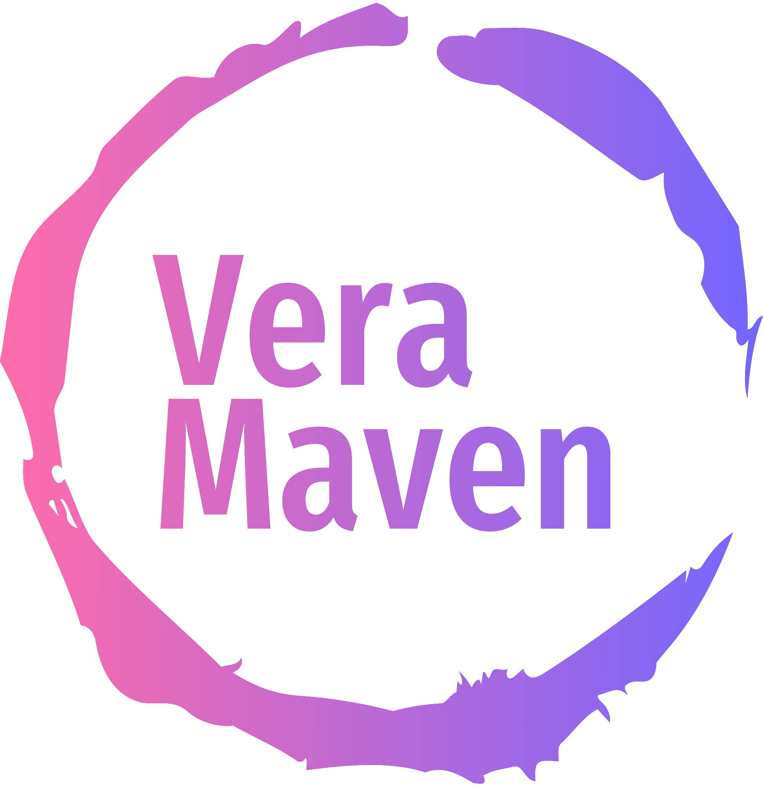

About us
At Vera Maven, we are passionate about sports and education. We believe in the power of marketing to engage and inspire students, and we specialize in providing educational resources and programs that focus on sports marketing.
Our Mission
Our mission is to empower students with the knowledge and skills necessary to succeed in the dynamic field of sports marketing. We aim to bridge the gap between sports and marketing by offering innovative and interactive learning experiences.
What We Do
Educational Resources: We develop comprehensive educational resources, including textbooks, online courses, and interactive materials, specifically tailored to sports marketing. These resources cover a wide range of topics, from understanding consumer behavior in sports to creating effective marketing campaigns for sports teams and events.
Workshops and Seminars: We organize workshops and seminars where students can learn directly from industry experts. Our events provide valuable insights into the latest trends and strategies in sports marketing, allowing students to gain practical knowledge and network with professionals in the field.
Internship Opportunities: We collaborate with sports organizations, teams, and agencies to offer internship opportunities to aspiring sports marketers. These internships provide hands-on experience, allowing students to apply their theoretical knowledge in real-world scenarios and develop essential skills for their future careers.
Consulting Services: We provide consulting services to educational institutions, sports organizations, and businesses seeking guidance on sports marketing initiatives. Our team of experts offers strategic advice, conducts market research, and assists with the development and implementation of effective marketing strategies.
Why Choose Us
Expertise: Our team consists of experienced professionals with a deep understanding of both sports and marketing. We stay updated with the latest industry trends and best practices to deliver high-quality educational resources and services.
Practical Approach: We believe in the importance of practical learning. Our programs and resources are designed to provide students with real-world examples and hands-on activities, ensuring they develop the skills needed to excel in the sports marketing industry.
Industry Connections: We have established strong relationships with sports organizations, agencies, and professionals. Through our network, we connect students with industry experts, mentors, and internship opportunities, giving them valuable exposure and networking opportunities.
Passion for Education: Education is at the core of what we do. We are dedicated to empowering students and fostering a love for marketing in the context of sports. We strive to make learning engaging, enjoyable, and impactful.
Contact Us!
We would love to hear from you! If you have any inquiries, partnership opportunities, or would like to learn more about our services, please don't hesitate to reach out to us. You can contact us through our website, email, or phone, and our team will be happy to assist you.
